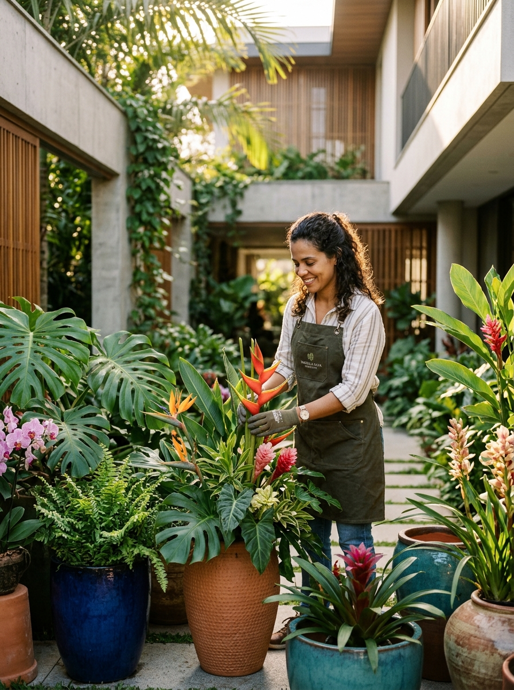

PAISAGISMO AUTORAL, JARDINAGEM & FLORICULTURA BOUTIQUE
Natureza Viva, Harmonia e Beleza.
O Jardim e o Arranjo Perfeito para o Seu Espaço.
Implantação e manutenção completa de jardins residenciais e condominiais, projetos paisagísticos sob medida, jardins verticais, revitalização de gramados, podas técnicas e floricultura boutique com arranjos florais, orquídeas, vasos vietnamitas e plantas ornamentais selecionadas direto do produtor.
★★★★★ 4.9 / 5.0
Mais de 1.850 jardins transformados e arranjos entregues com garantia de vitalidade

Espécies Selecionadas
Viveiro Próprio & Manejo Técnico
Garantia de Pega & Frescor
Visita Técnica & Entrega no Mesmo Dia